Cigar Review: Ramon Allones Specially Selected
In this post, I will share with you my review of Ramon Allones Specially Selected. Maybe my palette is not fully developed yet, but I tried my best to take down my notes. Let's check it out!
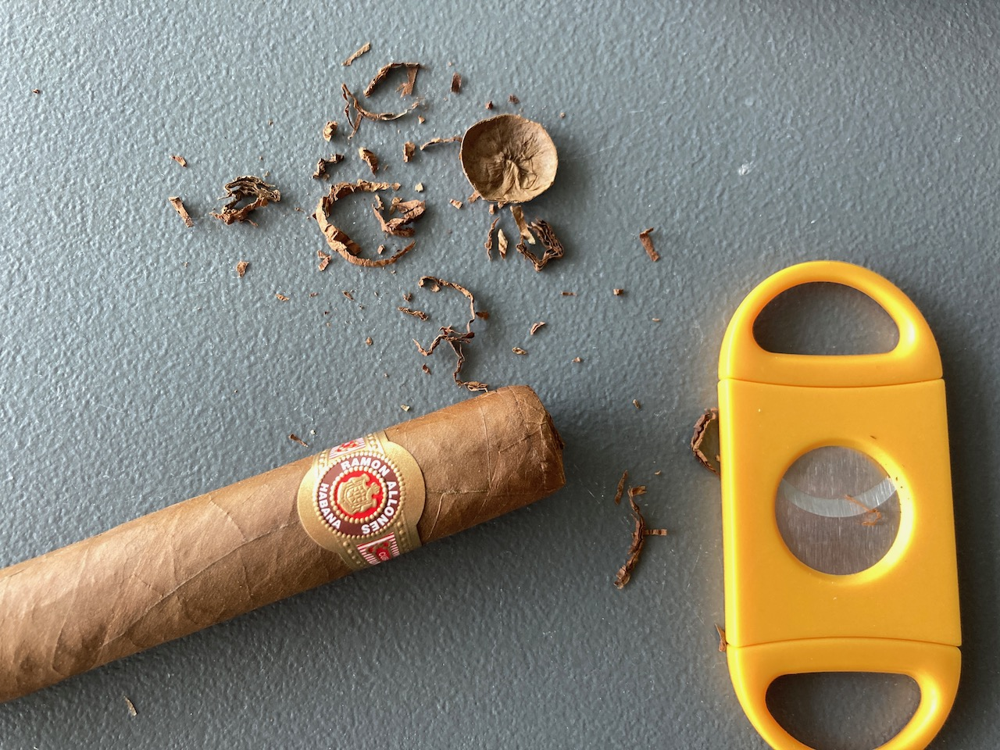
This is a smooth cigar. I did not taste spice at all like any other cigars. It's been sitting in my cigar storage box for a few weeks though so maybe that affected it a little bit. It was smooth for me.
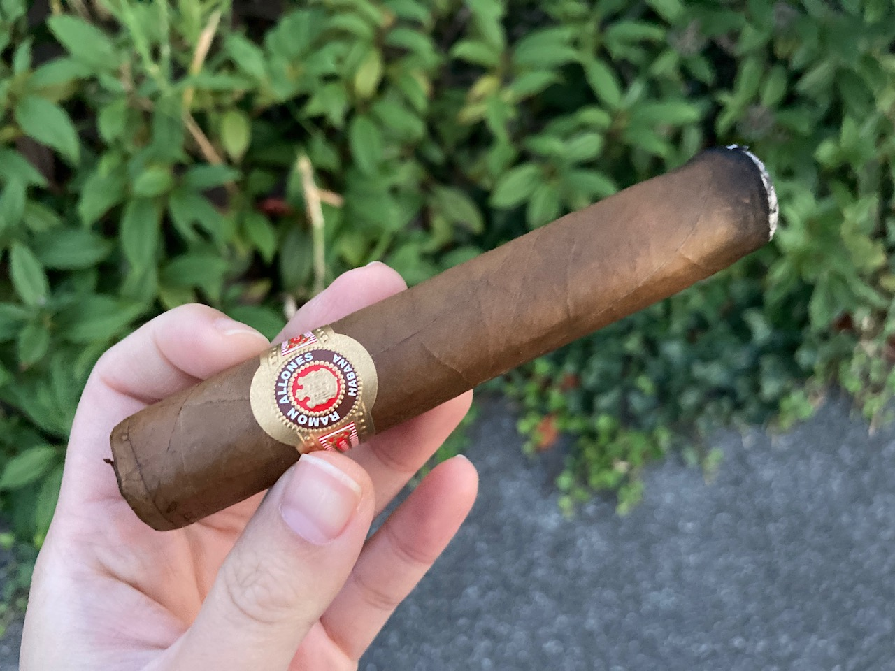 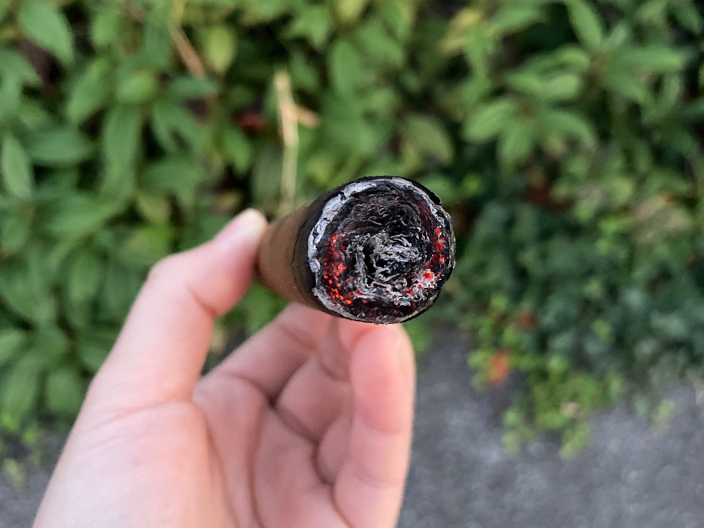
The burn was pretty good. It was pretty straight throughout and I didn't have to touch it up too many times when I was having this one outdoor. The ash was white and I think it looks pretty nice as well.
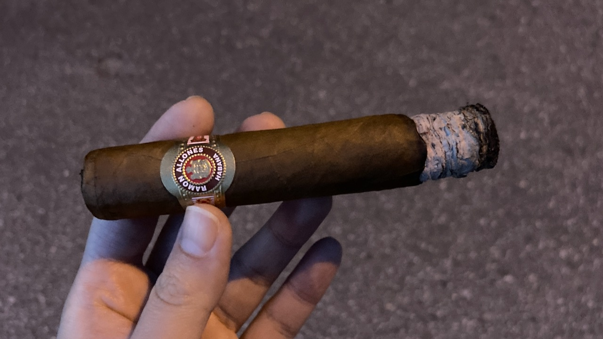 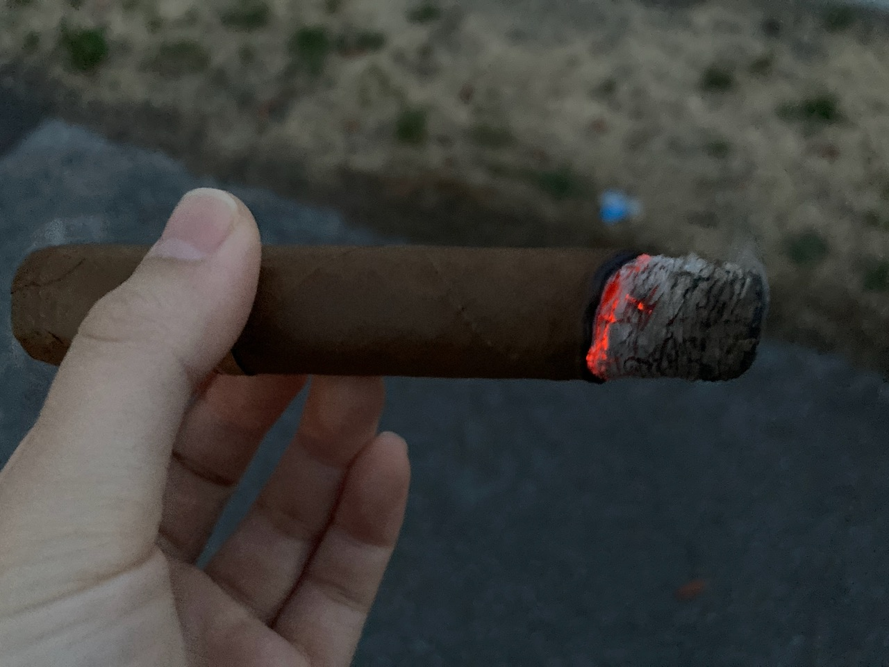
The cigar started out as almond type of nuttiness for me. Definitely woody scent. Midway through, I did not taste much else other than tobacco though. It turned slightly sour in the middle, but that did not last very long. I mostly just tasted tobacco towards the end of my smoke.
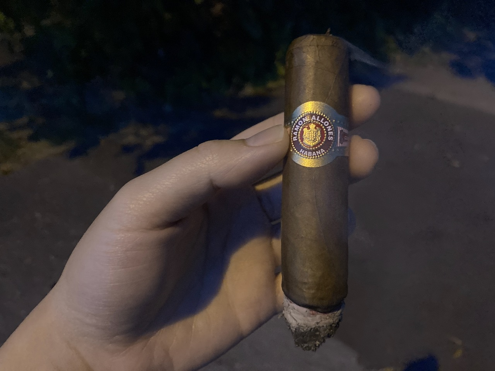
I ended the cigar after noticing that it was out. I was trying to light it up again, but decided not to because it was getting dark and I wasn't tasting any other interesting flavours other than maybe smoke. I definitely overheat the cigar that it dug into the middle. Kinda cool!
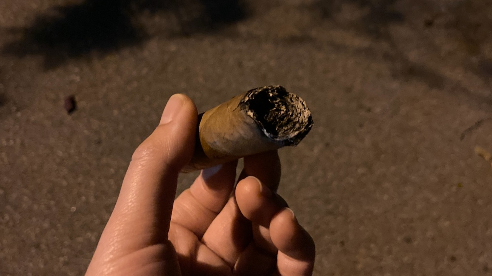
 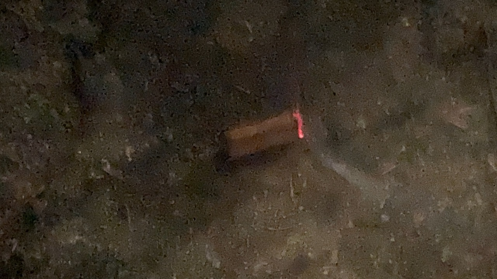
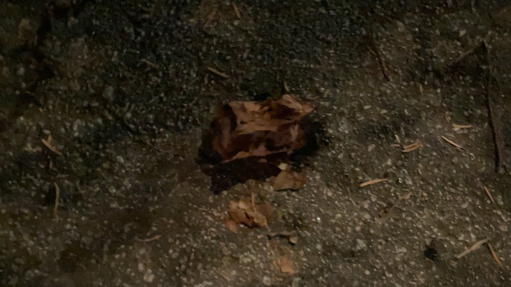
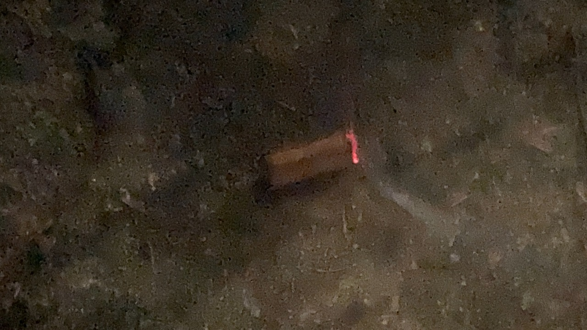
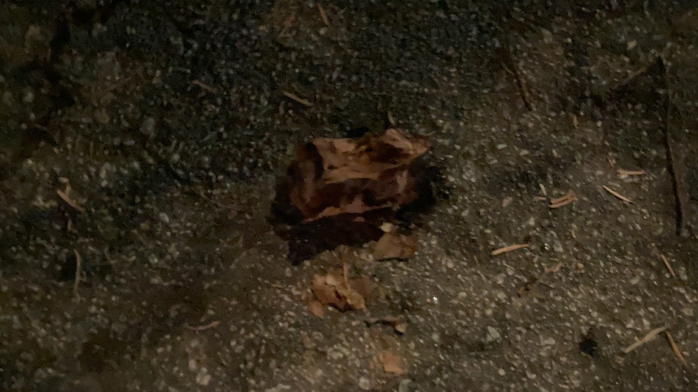
My smoke time for this one was a little bit over than 50 minutes. I had this one in a quiet neighbourhood near the train that's close to a park. It started out as a calm no-wind day. The wind started to pick up after the sun went down towards the end of my cigar though.
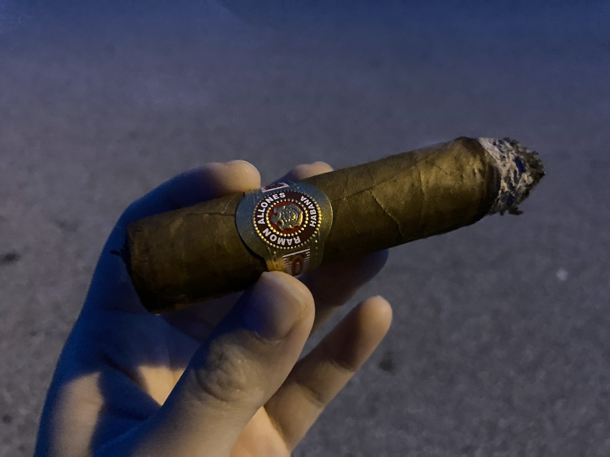

Overall, I enjoy my time with this cigar. The flavour is not the most interesting from what I experienced, but it's a good cigar.